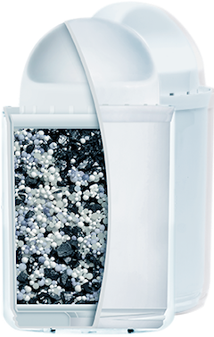

<section id="technology" class="technology">
  <div class="flex-wrap-tech">

    <div class="flex-items-tech">
      <h3>Technology</h3>
      <p>On the cover of the cartridge installed fine mesh. she retards rust, sand and other harmful particles.</p>
      <p>Activated charcoal purifies water from chlorine, chlorine additives and pesticides. It improves the taste and odor of water.</p>
      <h3>Removes toxic metals</h3>
      <p>Ionnoobminna resin removes toxic metals: lead, copper, aluminum.</p>
      <p>Hard water leaves the scale in household appliances and stains on the container. The filter softens the water and your vessels remains clean, tea and lasts longer.</p>
    </div>

    <div class="flex-items-tech">
      
    </div>

  </div>

  <!-- /Two Column Flex -->
</section>
